Inside the Workstation
Synchronized MIDI sequencing, interactive harmony editing, and fine-grained Pro Engine controls.
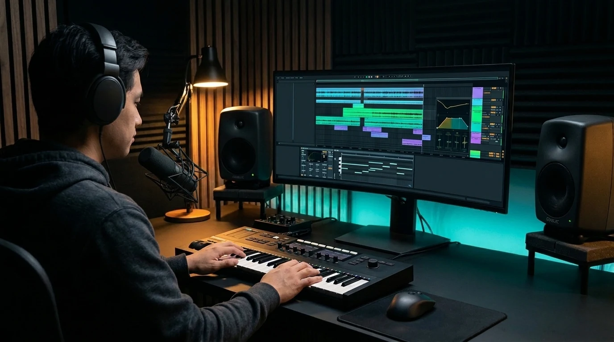
Your Private Offline Music Studio
Compose, brainstorm ideas, arrange wild genre-swap covers, and export clean multi-track MIDI + 48kHz audio straight into your primary DAW — with zero subscriptions or cloud queues.
Instant Composition & Smart Style Builder
Launch fast with 22 categorized genre templates or assemble disciplined prompts using Smart Style Builder (Language → BPM → Genre → Lead Instruments) plus structured [Intro], [Verse], and [Chorus] tags.
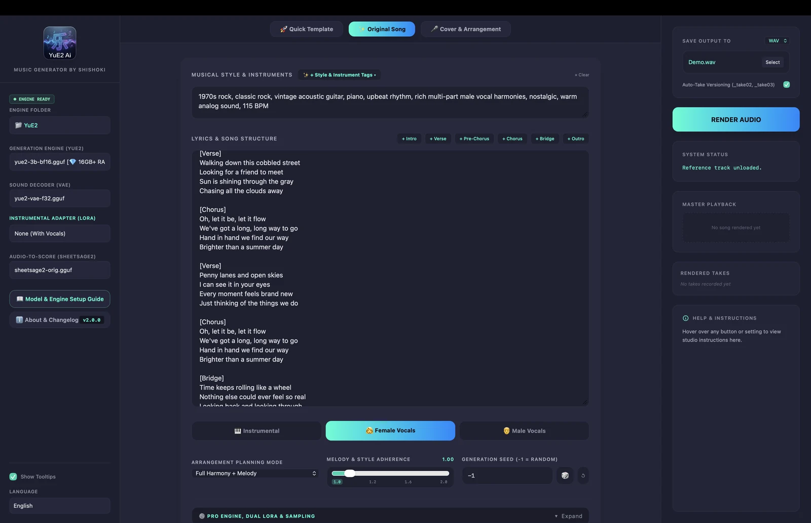
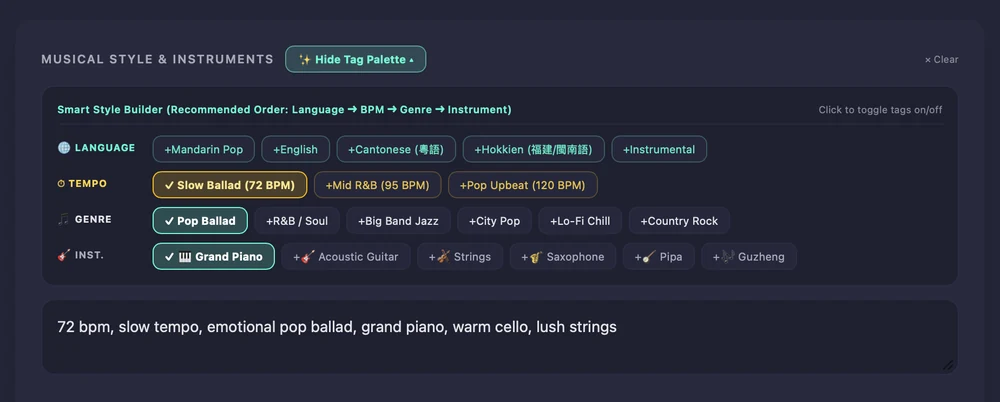
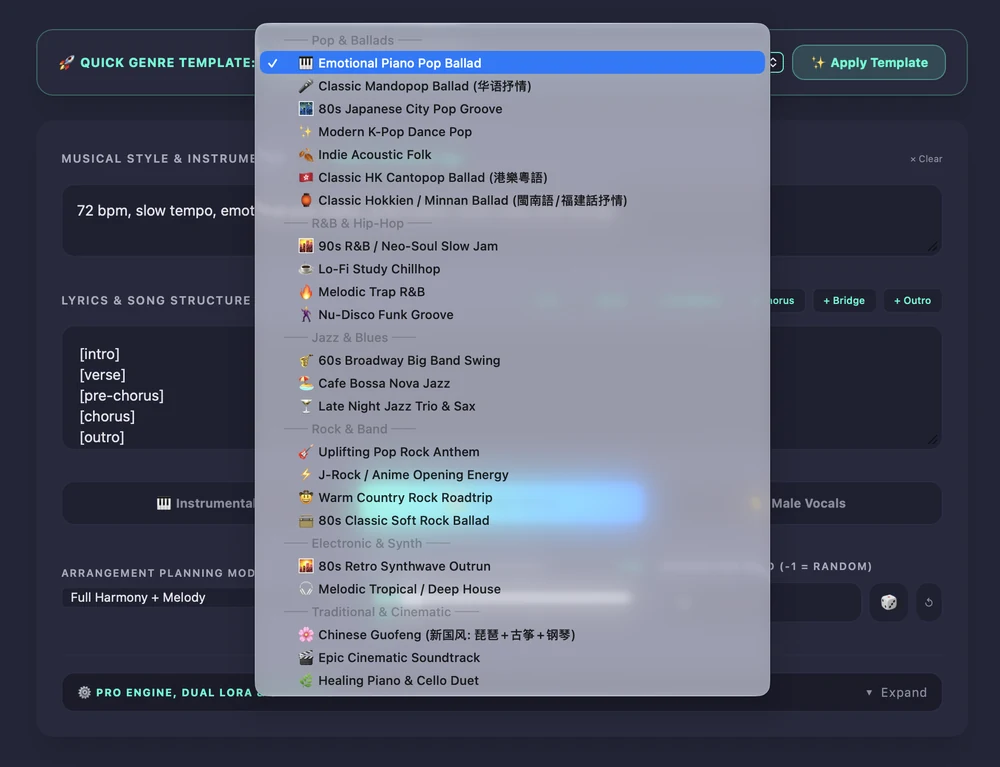
Covers, Genre Swaps & Iterative Takes
Drop a reference song (or import .mid from your DAW), extract melody + chords with SheetSage2, choose Vocal Cover or Karaoke/Instrumental Lead modes, and protect every winner with Auto-Take Versioning & exact #seed recall.
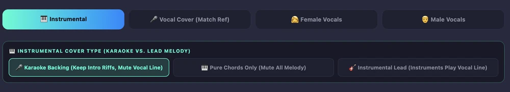
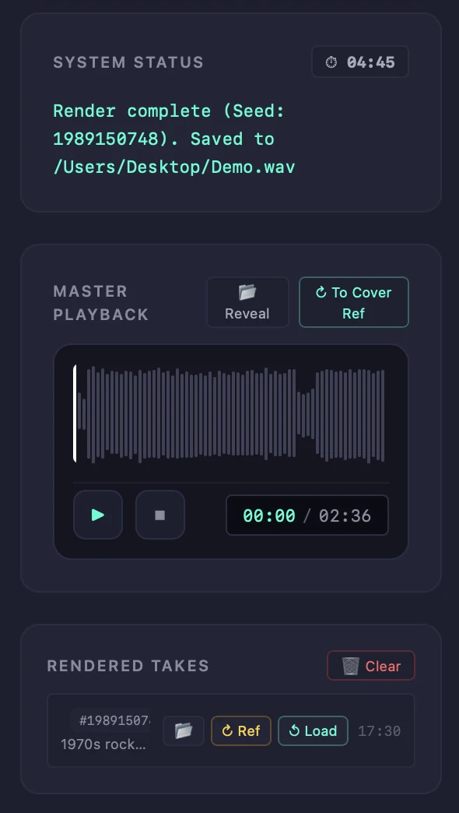
Dual View MIDI, Stave & Chord Studio
Edit Piano Roll notes and 5-line engraved Stave notation side-by-side — every note edit syncs instantaneously across all views and auditions through 8 built-in SoundFont instruments with 1-click Jazz/R&B reharmonization.
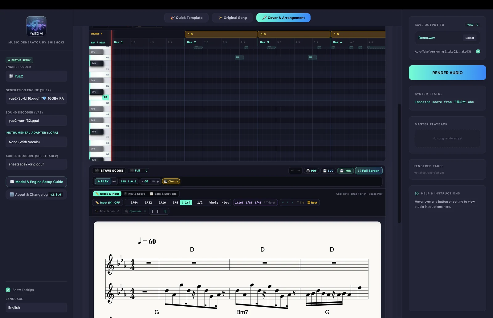
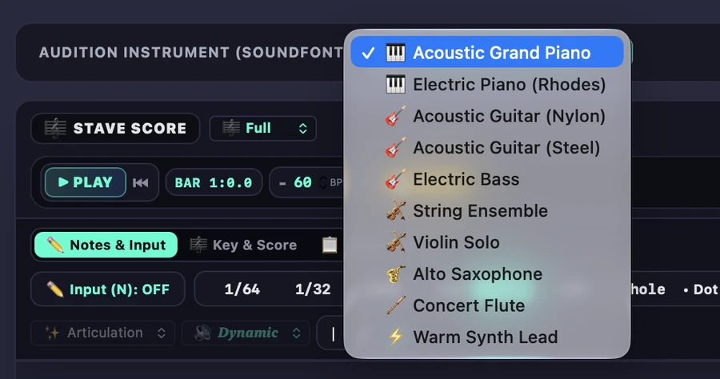

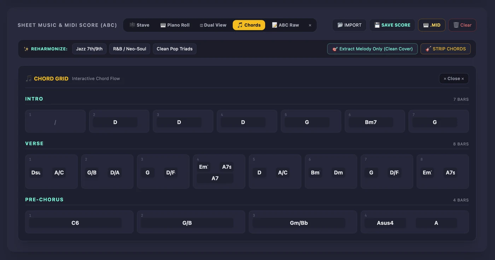
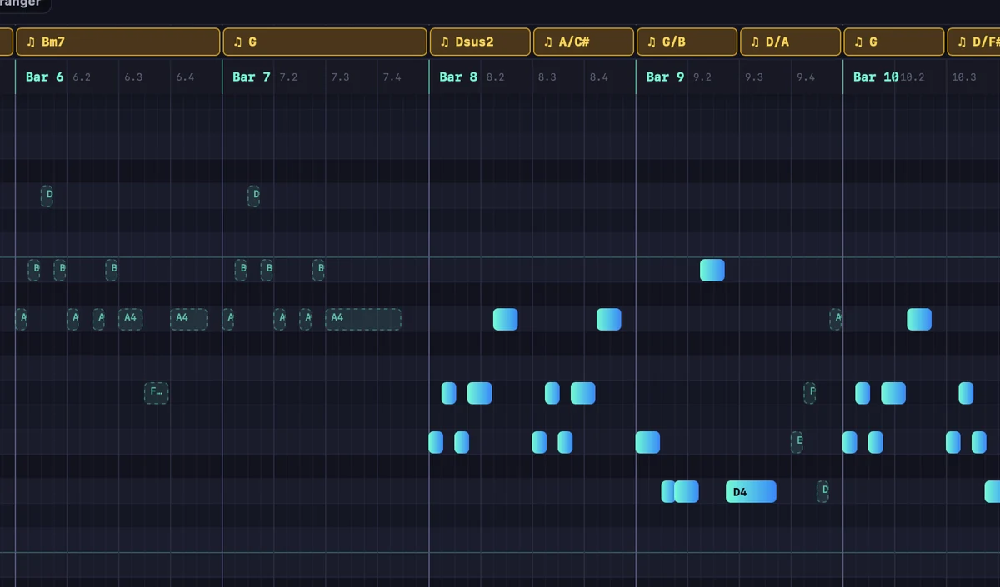
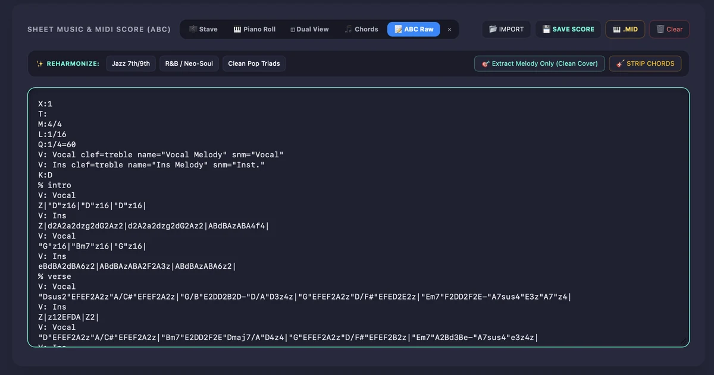
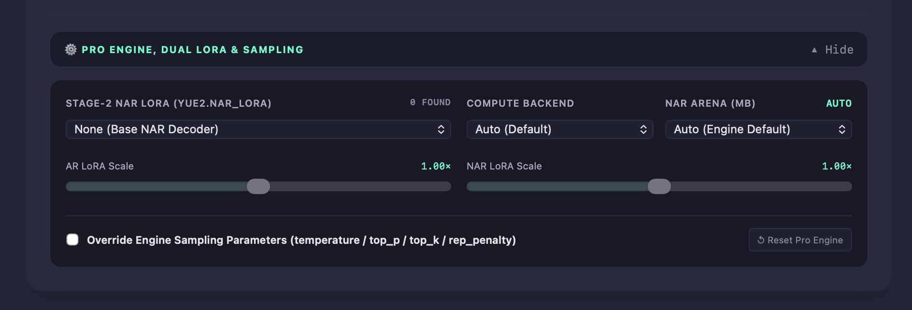
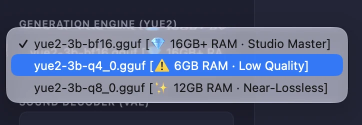